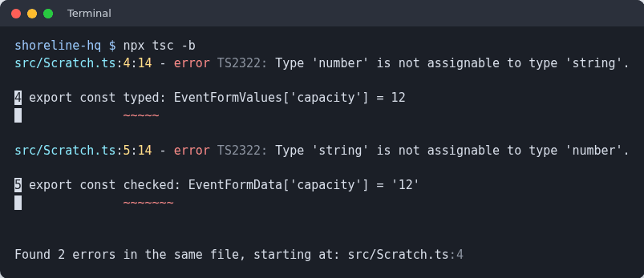
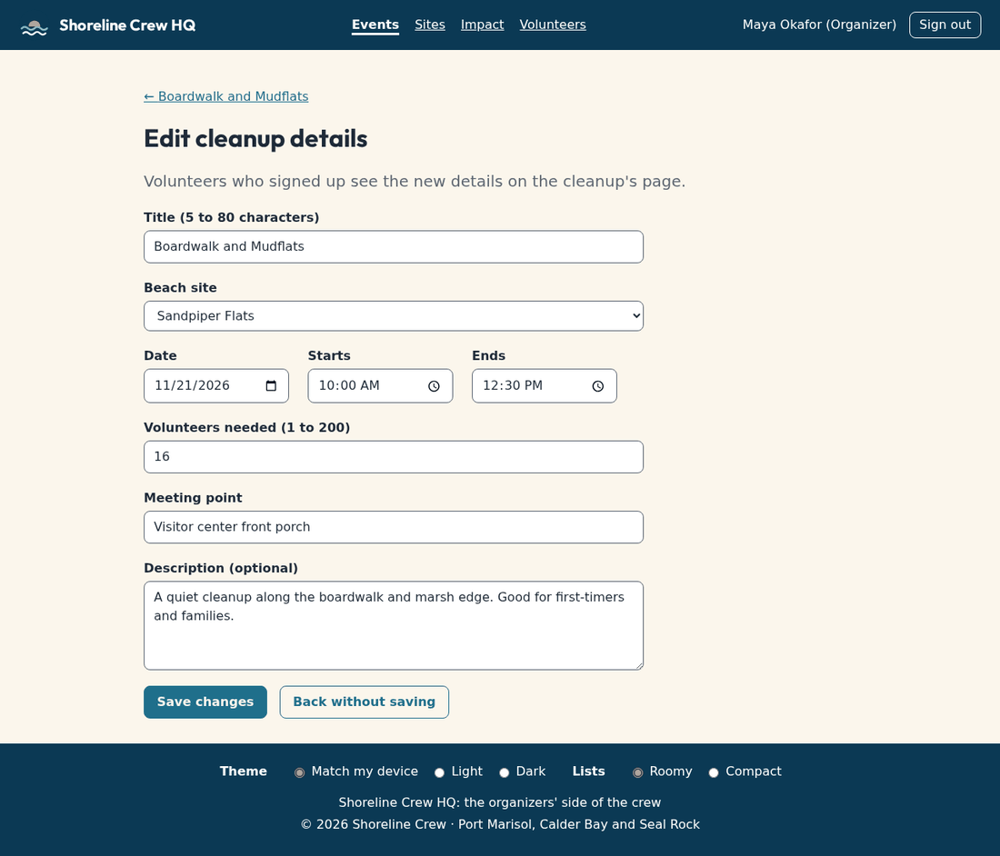
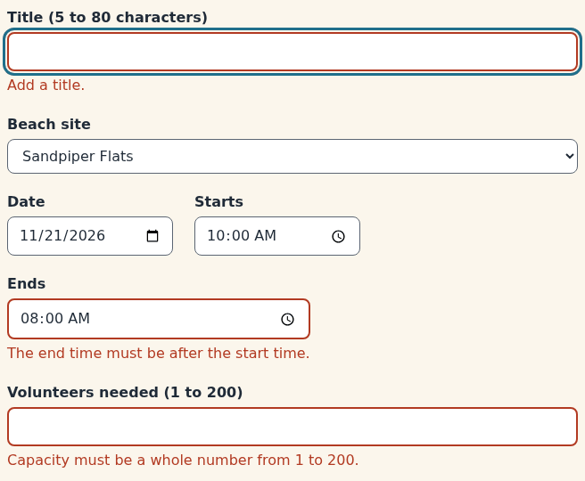
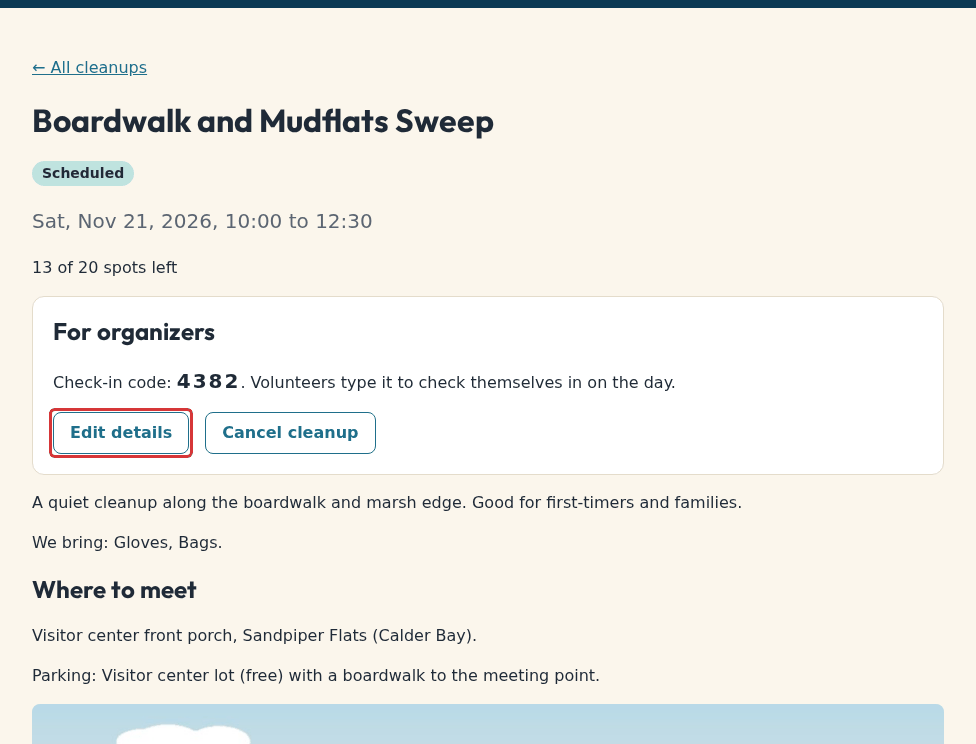
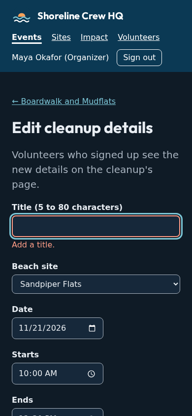

📝 Lesson 8.1: React Hook Form + Zod
Luis planned the Boardwalk and Mudflats cleanup for 16 volunteers, then the marsh ranger offered a second parking lot and Luis wants room for 20. Today the HQ cannot help him: organizers can create and cancel a cleanup, but not fix a typo in its title. In this lesson you build that missing page with the tools most React teams use for serious forms, React Hook Form and Zod. Along the way you pay off a debt from Lesson 7.3: you counted how many places describe a valid cleanup. After today, the form's rules live in one schema that both forms share, and TypeScript reads the form's types from it.
🎯 Learning Objectives
By the end of this lesson, you will be able to:
- Write a Zod 4 schema that is both a TypeScript type and the checks behind it, with messages people understand
- Tell a schema's input type from its output type (
z.input,z.output) and giveuseFormthe right generics - Build a form with React Hook Form:
register,handleSubmit,formStateandzodResolver - Show the API's 400 field errors under the right fields with
setError, and a form-wide message with a root error - Decide when a form needs a library and when React 19's form actions are enough, and say why
📦 Code for this lesson
Starting code: lesson-27-start.zip · Finished code: lesson-27-end.zip. Each folder has a README with the commands to run it. Copy .env.example to .env.local in shoreline-hq before npm run dev.
In This Lesson
🧾 One Description of a Valid Cleanup
Lesson 7.3 asked you to count how many places in the HQ describe a valid cleanup. Here is what you probably found:
| Where | What it describes | Written as |
|---|---|---|
utils/eventForm.ts: EventField, EventFormValues | The form's fields and their types | TypeScript types (gone when the code runs) |
utils/eventForm.ts: validateEvent, toNewEvent | The rules (5 to 80 characters, 1 to 200 volunteers…) and turning text into the API's types | Hand-written if statements |
api/client.ts: isCleanupEvent | The shape of a cleanup the API sends back | A type predicate |
shoreline-api's core/api.ts | The rules again, plus ones only the server can check | The API's own code |
The first two rows are the problem. The type says "capacity is a string the person typed", the rules say "and it must be a whole number from 1 to 200", and nothing connects them: add a field to one and TypeScript cannot remind you about the other. A second form (the edit page you build today) would need both again. That is the job of a schema library: you describe the data once, as a value your program can run, and the library gives you both the checks and the TypeScript type.
💡 Mental model: the crew's sign-up sheet template
Shoreline Crew prints its sign-up sheets from one template. The template decides which boxes the sheet has (the type) and the notes beside them, such as "phone: digits only" (the rules). Every sheet printed from it matches, and changing the template changes every sheet. A Zod schema is that template: one object that says what the fields are and what counts as filled in correctly. React Hook Form is the clipboard that holds the sheet while someone fills it in, and checks it against the template when they hand it back.
The last two rows stay. The API is the authority (Lesson 3.5): it checks everything again, and some rules, such as "18 people already signed up, so capacity cannot drop to 10", only it can check. And isCleanupEvent describes something different, the shape of data coming back; "Two Forms, One Schema" explains why the HQ keeps it as it is.
🌱 Why learn two libraries for something you can already do?
You built a complete form by hand in Lesson 3.5, and that was the right first step: you know what FormData, field errors, focus and aria-invalid are, so nothing today is magic. On a team, though, forms are where bugs collect, and React Hook Form and Zod are two of the libraries you are most likely to find in an existing React codebase or a job ad. Learning them on top of what you already understand is the fast way in.
🛡️ Zod 4: A Type and Its Checks
Zod builds schemas from small pieces: z.string(), z.number(), z.object({ … }). Each piece can carry rules (.min(5), .max(80)) and changes (.trim()). Here is the schema for a cleanup's details, the one file both forms will share:
// The rules for a cleanup's details, shared by the Plan a cleanup and Edit forms.
// The API checks the same rules (and a few only it can check); most messages match its own.
export const eventFormSchema = z
.object({
title: z
.string()
.trim()
// error can be a function: one rule, a message that fits what was typed
.min(5, {
error: (issue) =>
issue.input === '' ? 'Add a title.' : 'Use at least 5 characters for the title.',
})
.max(80, 'Keep the title to 80 characters or fewer.'),
siteId: z.string().min(1, 'Choose one of the cleanup sites.'),
date: z.string().refine(isTodayOrLater, {
error: (issue) => (issue.input === '' ? 'Pick a date.' : 'Pick today or a later date.'),
}),
startTime: z.string().min(1, 'Pick a start time.'),
endTime: z.string().min(1, 'Pick an end time.'),
// The box holds text; the API wants a number. coerce turns '12' into 12 (and '' into 0).
capacity: z.coerce
.number<string>({ error: capacityRule })
.refine((count) => Number.isInteger(count) && count >= 1 && count <= 200, capacityRule),
meetingPoint: z
.string()
.trim()
.min(3, 'Say where volunteers meet (at least 3 characters).')
.max(120, 'Keep the meeting point to 120 characters or fewer.'),
description: z.string().trim().max(2000, 'Keep the description to 2000 characters or fewer.'),
})
// ...- The second argument of a rule is its message:
.min(1, 'Choose one of the cleanup sites.'). The messages are the ones the Plan a cleanup form has shown since Lesson 3.5, so nothing changes for the people using it. - A message can also be a function of the problem:
{ error: (issue) => … }.issue.inputis the value that failed, so one rule can say "Add a title." for an empty box and "Use at least 5 characters for the title." for a short one.erroris Zod 4's name for this option (see the version note below). .trim()changes the value before the rules run, so' 'counts as empty and the checked title has no stray spaces..refine(check, message)adds a rule of your own.isTodayOrLatercompares with today when the check runs, not when the file loaded.z.coerce.number()turns the text'12'into the number12before checking it. The next section is about what that does to the types.
One rule involves two fields: the end time must be after the start time. A field's rules only see their own field, so this rule goes on the whole object, with path saying which field gets the message:
// A rule about two fields belongs to the object; path puts its message under endTime
.refine((event) => event.endTime > event.startTime, {
path: ['endTime'],
error: 'The end time must be after the start time.',
// An object's refine normally waits until EVERY field is valid. This one only needs the
// two times to be valid, so its message appears together with the others.
when: ({ issues }) =>
issues.every((issue) => issue.path?.[0] !== 'startTime' && issue.path?.[0] !== 'endTime'),
})The when option needs a word. Zod normally runs an object's refine only when every field is valid, because the function receives the whole object and could trip over a bad value. That would hide "The end time must be after the start time." until everything else was fixed (Common Mistakes shows it). when says this rule only needs the two times: it runs whenever neither of them has a problem.
A schema checks data with safeParse, which never throws. It returns a discriminated union (Lesson 2.2) on success: either { success: true, data } with the checked data, or { success: false, error } with every problem. z.flattenError(error).fieldErrors turns the problems into the shape the HQ already uses: field name to a list of messages. (parse does the same but throws instead of returning success: false.)
// A quick look at the schema with Node. Delete this file when you are done.
import { z } from 'zod'
import { eventFormSchema } from './api/schemas.ts'
const typed = {
title: ' Dune Grass Cleanup ',
siteId: 'north-jetty',
date: '2099-06-14',
startTime: '09:00',
endTime: '11:30',
capacity: '12',
meetingPoint: 'North jetty steps',
description: '',
}
console.log(eventFormSchema.parse(typed))
const result = eventFormSchema.safeParse({ ...typed, title: 'Dune', capacity: 'lots', endTime: '08:00' })
if (!result.success) {
console.log(z.flattenError(result.error).fieldErrors)
}Expected output
{
title: 'Dune Grass Cleanup',
siteId: 'north-jetty',
date: '2099-06-14',
startTime: '09:00',
endTime: '11:30',
capacity: 12,
meetingPoint: 'North jetty steps',
description: ''
}
{
title: [ 'Use at least 5 characters for the title.' ],
capacity: [ 'Capacity must be a whole number from 1 to 200.' ],
endTime: [ 'The end time must be after the start time.' ]
}Look at the first object: the title lost its spaces and capacity is 12 without quotes, a number. The second object has one message per field, ready for FieldError. You will run this file yourself in Step 1.
🧩 Version note: Zod 4
Zod 4 renamed the options that set messages: one error option (a string or a function) replaces Zod 3's message, required_error, invalid_type_error and errorMap (message still works but is deprecated). error.flatten() became z.flattenError(error), and string formats moved to the top level: z.email() instead of z.string().email(). Tutorials written before Zod 4 use the old forms; Common Mistakes shows what tsc says about one of them.
🔀 Input and Output Types
A Zod schema has two TypeScript types. Its input type is what you may hand it; its output type is what comes back after a successful check. For most schemas they are the same, but .trim(), coerce, .transform() and .default() can make them differ. The cleanup schema has one such field: the capacity box holds text, and the checked data holds a number.
/** What the form's fields hold: text, as typed */
export type EventFormValues = z.input<typeof eventFormSchema>
/** What a successful check gives back: trimmed, with capacity as a number, ready to send */
export type EventFormData = z.output<typeof eventFormSchema>z.input<typeof eventFormSchema> reads the input type out of the schema value (typeof turns a value into its type, Lesson 7.3), and z.output the output type. (z.infer, which you will see in many tutorials, is another name for z.output.) To see them, ask TypeScript to put the wrong thing in each:
import type { EventFormData, EventFormValues } from './api/schemas.ts'
// What the capacity box holds, and what the checked data holds
export const typed: EventFormValues['capacity'] = 12
export const checked: EventFormData['capacity'] = '12'
string (z.input), the checked data holds a number (z.output).Expected output
src/Scratch.ts:4:14 - error TS2322: Type 'number' is not assignable to type 'string'.
4 export const typed: EventFormValues['capacity'] = 12
~~~~~
src/Scratch.ts:5:14 - error TS2322: Type 'string' is not assignable to type 'number'.
5 export const checked: EventFormData['capacity'] = '12'
~~~~~~~
Found 2 errors in the same file, starting at: src/Scratch.ts:4Why z.coerce.number<string>() and not just z.coerce.number()? A coerced schema accepts anything it can try to turn into a number, so its input type is unknown by default. The type argument narrows the input to string, which is true for a form box and keeps the form's types honest: every field's value is text, exactly like Lesson 3.5's EventFormValues. The difference between the two types is the point of the schema. The form works with what people type; the code after the check works with what the API wants.
💡 Why this matters for forms
A form library holds the input type while people type and hands your submit function the output type after the check. Giving it the wrong one is the most common TypeScript error with React Hook Form and Zod, and it is in Common Mistakes. Remember the rule: fields hold the input, the submit function gets the output.
🎣 React Hook Form
React Hook Form (RHF) is a library that keeps a form's values, errors and status for you. Like the Plan a cleanup form, it uses uncontrolled inputs (Lesson 3.5): each box keeps its own value, and RHF reads it through a ref when it needs to check or submit. You get one Hook, useForm, and it gives back the tools:
// The resolver runs the schema: its input type is the fields' type, its output what save gets
const {
register,
handleSubmit,
setError,
formState: { errors, isSubmitting },
} = useForm({
resolver: zodResolver(eventFormSchema),
defaultValues: toFormValues(event),
})| Part | What it does |
|---|---|
resolver: zodResolver(eventFormSchema) | Runs the schema whenever RHF checks the form, and turns Zod's problems into RHF's errors |
defaultValues | What the boxes start with: here the saved cleanup as text. Read once, when the form is created |
register('title') | Returns name, ref, onChange and onBlur to spread on a box, so RHF can read it and follow its changes |
handleSubmit(save) | An onSubmit handler: stops the page load, runs the resolver, then calls save with the checked data, or shows the errors and focuses the first bad field |
formState.errors | One error per field (errors.title?.message), plus errors.root for the whole form |
formState.isSubmitting | true while save runs (it is async, so that includes the request) |
setError | Adds an error by hand, for example one the API sent |
There are no type arguments: zodResolver's return type carries the schema's input and output types, and useForm infers both from it. Hover useForm in VS Code and you will see UseFormReturn with the input type first and the output type last. Everything else follows: register accepts only the schema's eight field names, errors has a property for each, and save must accept the output type, EventFormData, with capacity: number.
import { zodResolver } from '@hookform/resolvers/zod'
import { useForm } from 'react-hook-form'
import { eventFormSchema } from './api/schemas.ts'
export function useTitleField() {
const { register } = useForm({ resolver: zodResolver(eventFormSchema) })
return register('titel')
}Expected output
src/Scratch.tsx:7:19 - error TS2345: Argument of type '"titel"' is not assignable to parameter of type '"capacity" | "date" | "description" | "endTime" | "meetingPoint" | "siteId" | "startTime" | "title"'.
7 return register('titel')
~~~~~~~
Found 1 error in src/Scratch.tsx:7Compare that with Lesson 3.5, where EventField had to be written by hand to catch the same typo. Now it comes from the schema. If you prefer to see the types written out, the explicit form is useForm<EventFormValues, unknown, EventFormData>: field values, a "context" you will not need, and the type after the resolver (this type-checks too).
Each field gets its props from a small helper, like Lesson 3.5's fieldProps, with register spread in:
// What every field needs: register's name, ref and handlers, plus a link to its message
function fieldProps(field: EventField) {
const invalid = errors[field] !== undefined
return {
id: field,
...register(field),
'aria-invalid': invalid,
'aria-describedby': invalid ? `${field}-error` : undefined,
}
}
// React Hook Form keeps one message per field; FieldError takes a list
function messagesFor(field: EventField) {
const message = errors[field]?.message
return message === undefined ? undefined : [message]
}When does it check? By default (mode: 'onSubmit'), nothing is checked until the first Save. After that, every change to a field is checked again (reValidateMode: 'onChange'), so a message disappears as soon as the field is fixed. Other modes are 'onBlur', 'onTouched' (after leaving a field, then on every change; Exercise 1), 'onChange' and 'all'. Checking while someone is still typing their first attempt feels like being told off, which is why the default waits.
How often does it re-render? Measured on the dev server with a React Profiler around the form: typing " steps" into the meeting point re-rendered the form 0 times; after a failed Save, typing into a field that was already valid still re-rendered it 0 times, and fixing the title re-rendered it 2 times, when its message changed. RHF re-renders only when something the component reads from formState changes. That works with the React Compiler from Lesson 5.3: npm run lint reports nothing, and every message in this lesson was measured with the compiler on.
📨 When the API Says No
The schema catches mistakes before anything is sent. The API still has the last word, and some of its rules need data the form does not have. Weekend Cove Cleanup is full, with 18 volunteers signed up; the schema happily accepts a capacity of 10, and shoreline-api answers 400 with fieldErrors: { "capacity": ["18 volunteers already hold a spot: capacity cannot be lower."] }. Lesson 7.2 showed those messages with FieldError in the Plan a cleanup form. With RHF, setError puts them into formState.errors, and the same markup shows them:
// handleSubmit calls this only when the schema found nothing to fix
async function save(changes: EventFormData) {
try {
await update.mutateAsync({ eventId: event.id, changes })
await navigate(`/events/${event.id}`)
} catch (error: unknown) {
if (error instanceof ApiError && error.fieldErrors !== undefined) {
// 400: the API's own rules said no. Its messages go under the same fields as ours.
let first = true
for (const [name, messages] of Object.entries(error.fieldErrors)) {
if (isEventField(name)) {
setError(name, { type: 'server', message: messages.join(' ') }, { shouldFocus: first })
first = false
}
}
setError('root.server', { message: error.message })
} else {
setError('root.server', { message: `Not saved. ${describeError(error)}` })
}
}
}setError(name, { type, message }, { shouldFocus })marks a field invalid with a message. The first field gets the focus, as the schema's errors do.- The API's
fieldErrorskeys are plain strings (it is JSON from outside).setErroronly takes the form's field names, soisEventField, a type predicate ineventForm.ts, checks each key first. Leave it out andtscsays so (Common Mistakes). 'root.server'is a root error: a message for the whole form, read fromerrors.root?.server?.message. The status line above the form shows it, or "Saving…" whileisSubmitting. React Hook Form's documentation says root errors do not carry over to the next submit.- Anything else (the API is down, a 500) becomes one sentence from
describeError. Measured with a forced 500: one PATCH (mutations do not retry, Lesson 7.2), "Not saved. The server had a problem (500). Try again in a moment.", and the typed title still in its box.
One measured detail: after the API's capacity message appeared, changing the capacity to 15 made the message disappear, because RHF checked the field again with the schema, and the schema has no objection to 15. Saving again brought the API's message back. That is the right split: the form clears what it cannot judge, and the API judges again on every save.
🛑 The form is a courtesy, the API is the lock
Everything the schema checks, someone can skip: DevTools, curl, an old version of the app. The edit page's guard (organizers only) and the schema make the HQ pleasant and fast; shoreline-api's own checks of the token, the role and every field are what keep the data safe. Never remove a server check because "the form already does it".
⚖️ Two Forms, One Schema
The HQ now has two cleanup forms. Should the Plan a cleanup form move to React Hook Form too? The honest answer for this app is no, not today, and the reasons are worth naming because you will face the same choice on real projects:
- The real problem was the duplicated rules, and the schema already fixed it. In the project, Plan a cleanup's action calls
eventFormSchema.safeParse(values)instead ofvalidateEvent. The rules, the messages and the types now live in one place for both forms. - It already works, and it is React's own tool.
useActionStatewith a form action (Lesson 3.5) has no dependency and does what this form needs: check on submit, show messages, keep the values, call the API (Lesson 7.2). Rewriting working code is a cost; do it when the form outgrows its tool. - The edit form needed things RHF gives for free: starting values from saved data (
defaultValues), errors that clear as people fix them, and (Exercises 1 and 3) knowing which fields changed. Those are the signs a form wants a library. - You will meet both. Form actions are the direction React and frameworks such as Next.js are going; React Hook Form is in most existing codebases. Seeing one schema serve both is the useful lesson.
The cost: the two forms repeat about fifty lines of field markup. If they keep growing together, a shared fields component (or moving Plan a cleanup to RHF) becomes worth it; Lesson 8.2's longer forms are where that decision gets made.
And isCleanupEvent? Zod can check API responses too, and Exercise 2 has you try it. The HQ keeps its hand-written guards for now, for a measured reason. Zod is the biggest thing this lesson adds to the build:
| Build of the HQ | JavaScript | gzip |
|---|---|---|
| After Lesson 7.3 | 431.11 kB | 135.60 kB |
| After this lesson (React Hook Form, Zod, the resolver, two forms) | 561.81 kB (+130.7) | 175.81 kB (+40.2) |
Built on their own, Zod's full API came to about 103 kB (25 kB gzip), React Hook Form about 46 kB (14 kB gzip) and the resolver about 6 kB (measured with a one-line test file each). Only organizers open the two forms. In Lesson 10.1 you will load pages like these only when someone visits them, so guests browsing cleanups never download Zod. If client.ts used Zod for every response, every visitor would need it. The guards stay small and hand-written, and the schemas stay with the forms. (Exercise 2 measures what a response schema adds today: almost nothing, because Zod is already in this build.)
Notice also that the build now prints a warning: one JavaScript file is over 500 kB. It is a warning, not an error; the build succeeds. It is Vite suggesting the code splitting that Lesson 10.1 teaches.
⚠️ Common Mistakes
⚠️ useForm<z.infer<typeof schema>> with a schema that changes types
Many tutorials write type FormValues = z.infer<typeof schema> and pass it to useForm. With a schema whose input and output differ, that is wrong: z.infer is the output (capacity a number), but the fields hold the input (capacity text).
import { zodResolver } from '@hookform/resolvers/zod'
import { useForm } from 'react-hook-form'
import type { z } from 'zod'
import { eventFormSchema } from './api/schemas.ts'
export function useEventForm() {
// z.infer is the OUTPUT type (capacity: number), but the fields hold the INPUT (capacity: string)
return useForm<z.infer<typeof eventFormSchema>>({
resolver: zodResolver(eventFormSchema),
})
}The first line of the error names two long Resolver types; the end of the message says what differs:
Expected output
...
Types of parameters 'values' and 'values' are incompatible.
Type '{ title: string; siteId: string; date: string; startTime: string; endTime: string; capacity: number; meetingPoint: string; description: string; }' is not assignable to type '{ title: string; siteId: string; date: string; startTime: string; endTime: string; capacity: string; meetingPoint: string; description: string; }'.
Types of property 'capacity' are incompatible.
Type 'number' is not assignable to type 'string'.
9 resolver: zodResolver(eventFormSchema),
~~~~~~~~
Found 1 error in src/Scratch.tsx:9The fix: no type argument at all (let zodResolver decide), or all three: useForm<EventFormValues, unknown, EventFormData>. Read the message from the bottom up: "Types of property 'capacity' are incompatible" is the whole story.
⚠️ A two-field rule that waits for everything else
Without when, the end-time rule on the object runs only when every field is valid. Running the Step 1 test file with that version of the schema, the second object came out without the end-time message:
Expected output
...
{
title: [ 'Use at least 5 characters for the title.' ],
capacity: [ 'Capacity must be a whole number from 1 to 200.' ]
}The end time 08:00 is still before 09:00; nobody is told until the title and capacity are fixed and Save is pressed again. With when, all three messages arrive together.
⚠️ Passing the API's field names straight to setError
Remove the isEventField check from the loop in save, and:
Expected output
src/components/EditEventForm.tsx:45:20 - error TS2345: Argument of type 'string' is not assignable to parameter of type '"capacity" | "date" | "description" | "endTime" | "meetingPoint" | "siteId" | "startTime" | "title" | ErrorNamespacePath'.
45 setError(name, { type: 'server', message: messages.join(' ') }, { shouldFocus: first })
~~~~
Found 1 error in src/components/EditEventForm.tsx:45Object.entries gives string keys, and setError wants one of the form's names (or a root. name). Do not silence it with as EventField: the API could send a key the form does not have, such as suppliesProvided, and that message would vanish into an error nobody displays. The type predicate checks it for real.
⚠️ A child loader that forgets the guard
The edit route sits inside the organizers-only route group from Lesson 6.3, so it looks protected. But a parent route's loader and a child route's loader run at the same time. With organizersOnly(args) removed from editEventLoader, a guest opening /events/e08/edit was still sent to the sign-in page, but the browser had already sent GET /events/e08 and GET /sites (measured). Here the API would refuse anything private; elsewhere that could leak data or waste requests. Child loaders under a guard call the guard first.
⚠️ Zod 3 code from older tutorials
import { z } from 'zod'
// Zod 3 style, as many older tutorials write it
export const title = z
.string({ required_error: 'Add a title.' })
.min(5, { message: 'Use at least 5 characters for the title.' })
export const email = z.string().email()Expected output
src/Scratch.ts:5:13 - error TS2769: No overload matches this call.
The last overload gave the following error.
Object literal may only specify known properties, and 'required_error' does not exist in type '$ZodStringParams'.
5 .string({ required_error: 'Add a title.' })
~~~~~~~~~~~~~~
...
Found 1 error in src/Scratch.ts:5required_error is gone (use error), while { message: … } and z.string().email() still compile but are deprecated: VS Code draws them struck through. Write .min(5, 'Use at least…') or { error: … }, and z.email().
🛠️ Project: Edit a Cleanup's Details
Step 1 installs the libraries and writes the schema, Step 2 moves Plan a cleanup onto it, Step 3 adds the save and the route, Step 4 builds the form and its page, and Step 5 adds the way in and tries everything, including the API saying no. Keep shoreline-api and npm run dev running, and sign in as an organizer (maya.okafor@example.com, password shoreline-demo).
Step 1: Install the libraries and write the schema (12 min)
In a third terminal, in shoreline-hq:
npm install react-hook-form zod @hookform/resolversExpected output
added 4 packages, and audited 85 packages in 2s
19 packages are looking for funding
run `npm fund` for details
found 0 vulnerabilitiesThree libraries, plus one small helper the resolver uses (this course was checked with React Hook Form 7.92.0, Zod 4.6.7 and @hookform/resolvers 7.0.6; your timing will differ). @hookform/resolvers connects React Hook Form to schema libraries; you will import it from @hookform/resolvers/zod. Create src/api/schemas.ts:
// Shoreline Crew HQ's Zod schemas (Lesson 8.1): each one is a type AND its checks, written once.
import { z } from 'zod'
import { toDateString } from '../utils/format.ts'
// Compared when the check runs, so a form left open overnight uses the new date
function isTodayOrLater(date: string): boolean {
return date >= toDateString(new Date())
}
const capacityRule = 'Capacity must be a whole number from 1 to 200.'
// The rules for a cleanup's details, shared by the Plan a cleanup and Edit forms.
// The API checks the same rules (and a few only it can check); most messages match its own.
export const eventFormSchema = z
.object({
title: z
.string()
.trim()
// error can be a function: one rule, a message that fits what was typed
.min(5, {
error: (issue) =>
issue.input === '' ? 'Add a title.' : 'Use at least 5 characters for the title.',
})
.max(80, 'Keep the title to 80 characters or fewer.'),
siteId: z.string().min(1, 'Choose one of the cleanup sites.'),
date: z.string().refine(isTodayOrLater, {
error: (issue) => (issue.input === '' ? 'Pick a date.' : 'Pick today or a later date.'),
}),
startTime: z.string().min(1, 'Pick a start time.'),
endTime: z.string().min(1, 'Pick an end time.'),
// The box holds text; the API wants a number. coerce turns '12' into 12 (and '' into 0).
capacity: z.coerce
.number<string>({ error: capacityRule })
.refine((count) => Number.isInteger(count) && count >= 1 && count <= 200, capacityRule),
meetingPoint: z
.string()
.trim()
.min(3, 'Say where volunteers meet (at least 3 characters).')
.max(120, 'Keep the meeting point to 120 characters or fewer.'),
description: z.string().trim().max(2000, 'Keep the description to 2000 characters or fewer.'),
})
// A rule about two fields belongs to the object; path puts its message under endTime
.refine((event) => event.endTime > event.startTime, {
path: ['endTime'],
error: 'The end time must be after the start time.',
// An object's refine normally waits until EVERY field is valid. This one only needs the
// two times to be valid, so its message appears together with the others.
when: ({ issues }) =>
issues.every((issue) => issue.path?.[0] !== 'startTime' && issue.path?.[0] !== 'endTime'),
})
/** What the form's fields hold: text, as typed */
export type EventFormValues = z.input<typeof eventFormSchema>
/** What a successful check gives back: trimmed, with capacity as a number, ready to send */
export type EventFormData = z.output<typeof eventFormSchema>Now try it the way you tried TypeScript in Module 2: with Node, which runs TypeScript files by removing their types. Create src/try-schema.ts with the test file from "Zod 4: A Type and Its Checks" (the one that starts with // A quick look at the schema with Node), then run it:
node src/try-schema.tsYou should see the two objects from that section. Change a value or two (a title of 81 characters, a capacity of 0) and run it again. When you are done, delete src/try-schema.ts: it is not part of the app.
Step 2: Plan a cleanup checks with the schema (10 min)
utils/eventForm.ts keeps what is about reading forms, and loses the rules. The types now come from the schema; two small helpers are new: isEventField for the API's field names (Step 4) and toFormValues, which turns a saved cleanup into form text. Replace the whole file:
// Reading the cleanup forms (Lessons 3.5 and 8.1).
// The rules live in ONE place, eventFormSchema in api/schemas.ts; the types come from it too.
import type { EventFormValues } from '../api/schemas.ts'
import type { CleanupEvent } from '../api/types.ts'
// The form's fields: the schema's keys, so a new field in the schema is a new field here
export type EventField = keyof EventFormValues
// The API's fieldErrors shape (field name: messages), with names TypeScript can check
export type FieldErrors = Partial<Record<EventField, string[]>>
export const emptyValues: EventFormValues = {
title: '',
siteId: '',
date: '',
startTime: '',
endTime: '',
capacity: '',
meetingPoint: '',
description: '',
}
/** Is this name one of the form's fields? (The API's fieldErrors use plain strings.) */
export function isEventField(name: string): name is EventField {
return Object.hasOwn(emptyValues, name)
}
// formData.get() returns a string, a File (from a file input) or null (no such field)
function readText(formData: FormData, name: EventField): string {
const value = formData.get(name)
return typeof value === 'string' ? value.trim() : ''
}
export function readValues(formData: FormData): EventFormValues {
return {
title: readText(formData, 'title'),
siteId: readText(formData, 'siteId'),
date: readText(formData, 'date'),
startTime: readText(formData, 'startTime'),
endTime: readText(formData, 'endTime'),
capacity: readText(formData, 'capacity'),
meetingPoint: readText(formData, 'meetingPoint'),
description: readText(formData, 'description'),
}
}
/** A saved cleanup as the text the form shows (the edit form starts from these) */
export function toFormValues(event: CleanupEvent): EventFormValues {
return {
title: event.title,
siteId: event.siteId,
date: event.date,
startTime: event.startTime,
endTime: event.endTime,
capacity: String(event.capacity),
meetingPoint: event.meetingPoint,
description: event.description,
}
}validateEvent and toNewEvent are gone, so NewEventForm no longer compiles. That is TypeScript giving you the list of places to change. In src/components/NewEventForm.tsx, change the imports:
import { useActionState, useEffect, useRef } from 'react'
import { useNavigate } from 'react-router'
+import { z } from 'zod'
import { ApiError, describeError } from '../api/client.ts'
import { createEventMutation } from '../api/mutations.ts'
+import { eventFormSchema, type EventFormValues } from '../api/schemas.ts'
import type { Site } from '../api/types.ts'
-import {
- emptyValues,
- readValues,
- toNewEvent,
- validateEvent,
- type EventField,
- type EventFormValues,
- type FieldErrors,
-} from '../utils/eventForm.ts'
-import { toDateString } from '../utils/format.ts'
+import { emptyValues, readValues, type EventField, type FieldErrors } from '../utils/eventForm.ts'
import { Button } from './Button.tsx'
import { FieldError } from './FieldError.tsx'and the action:
// The form's action: React calls it with the previous state and the submitted FormData.
- // It is inside the component because it checks the site against the sites prop.
+ // It is inside the component because it uses the mutation and navigate.
async function planCleanup(_previous: FormState, formData: FormData): Promise<FormState> {
const values = readValues(formData)
- const errors = validateEvent(values, toDateString(new Date()), sites)
- if (Object.keys(errors).length > 0) {
- return { values, errors, problem: '' }
+ // The same schema as the Edit form: text in, checked data (capacity a number) out
+ const result = eventFormSchema.safeParse(values)
+ if (!result.success) {
+ return { values, errors: z.flattenError(result.error).fieldErrors, problem: '' }
}
// The button that submitted the form sends its own name and value
const status = formData.get('status') === 'scheduled' ? 'scheduled' : 'draft'
try {
- const created = await createEvent.mutateAsync(toNewEvent(values, status))
+ const created = await createEvent.mutateAsync({ ...result.data, status })
await navigate(`/events/${created.id}`)
return initialStatez.flattenError(…).fieldErrors has exactly the shape of FieldErrors, so FormState did not change. After the check, result.data is the output type: { ...result.data, status } is a complete NewEvent (TypeScript checks it), which is why toNewEvent could go. One check moved: the old code compared the site with the loaded sites; the schema only asks for a choice, since the menu only offers real sites, and the API checks the rest.
Open Plan a cleanup, type Dune as the title, set the times to 10:00 and 08:00, and press Publish. Measured: six messages (title, site, date, end time, capacity, meeting point), the same words as before, the focus in the title box, and no request to the API.
Step 3: Save edits, load the page, add the route (10 min)
Saving is a mutation like Lesson 7.2's. client.ts already has patchEvent(id, changes), and EventChanges (from types.ts) accepts any of the details. In src/api/mutations.ts, update the import and add a factory after cancelEventMutation:
import { patchEvent, patchSignup, postEvent } from './client.ts'
import { queryClient, rosterQuery } from './queries.ts'
-import type { NewEvent, SignupStatus } from './types.ts'
+import type { EventChanges, NewEvent, SignupStatus } from './types.ts'
/** Plan a cleanup. Waits for the API: the new cleanup's id comes from it. */ return mutationOptions({
mutationFn: (eventId: string) => patchEvent(eventId, { status: 'cancelled' }),
+ onSuccess: () => queryClient.invalidateQueries({ queryKey: ['events'] }),
+ })
+}
+
+/** Which cleanup to change, and the new values of its details */
+export interface EventUpdate {
+ eventId: string
+ changes: EventChanges
+}
+
+/** Save an organizer's edits. Waits for the API: it has rules the form cannot check. */
+export function updateEventMutation() {
+ return mutationOptions({
+ mutationFn: ({ eventId, changes }: EventUpdate) => patchEvent(eventId, changes),
+ // The cleanup's page and every list that shows it are out of date now
onSuccess: () => queryClient.invalidateQueries({ queryKey: ['events'] }),
})It waits for the API (not optimistic): edits can be refused, and Lesson 7.2's table puts "might be refused" on the waiting side. The schema's output, EventFormData, fits EventChanges without any conversion: every field is there with the API's type. Next, a loader for the new route. In src/pages/loaders.ts:
import { ApiError, readSession } from '../api/client.ts'
import { eventQuery, impactTotalsQuery, queryClient, sitesQuery, viewerId } from '../api/queries.ts'
+import { organizersOnly } from '../auth/guards.ts'
/** /sites: the six beach sites */ return null
}
+
+/** /events/:eventId/edit: organizers only; the cleanup and the sites must be in the cache */
+export async function editEventLoader(args: LoaderFunctionArgs) {
+ // The guard route's loader runs at the same time as this one: check first, so a guest
+ // is sent to sign in before any request goes out
+ organizersOnly(args)
+ const [ids] = await Promise.all([
+ eventLoader(args),
+ queryClient.query({ ...sitesQuery(), staleTime: 'static' }),
+ ])
+ return ids
+}organizersOnly(args) first (the rule from Lesson 6.3: a child loader runs at the same time as its guard). Then eventLoader does everything it does for the cleanup's page, including the "Cleanup not found" 404, and the sites load at the same time, because the form's menu needs them. Last, the route, inside the organizers-only group in src/App.tsx:
import { signInAction } from './auth/signInAction.ts'
import { AppLayout } from './components/AppLayout.tsx'
+import { EditEventPage } from './pages/EditEventPage.tsx'
import { ErrorPage } from './pages/ErrorPage.tsx'
import { EventPage } from './pages/EventPage.tsx' import { HomePage } from './pages/HomePage.tsx'
import { ImpactPage } from './pages/ImpactPage.tsx'
-import { eventLoader, impactLoader, sitesLoader } from './pages/loaders.ts'
+import { editEventLoader, eventLoader, impactLoader, sitesLoader } from './pages/loaders.ts'
import { NewEventPage } from './pages/NewEventPage.tsx'
import { NotFoundPage } from './pages/NotFoundPage.tsx' children: [
{ path: 'events/new', element: <NewEventPage /> },
+ // A child loader runs in parallel with the guard's: editEventLoader checks again first
+ { path: 'events/:eventId/edit', element: <EditEventPage />, loader: editEventLoader },
{
path: 'volunteers',EditEventPage does not exist yet, so tsc complains about the import until Step 4. That is fine: it is your to-do list.
Step 4: The edit form and its page (15 min)
Create src/components/EditEventForm.tsx. You have read every part of it in the sections above; the markup below the status line is the Plan a cleanup form's, with fieldProps now spreading register, and one submit button:
import { zodResolver } from '@hookform/resolvers/zod'
import { useMutation } from '@tanstack/react-query'
import { useForm } from 'react-hook-form'
import { Link, useNavigate } from 'react-router'
import { ApiError, describeError } from '../api/client.ts'
import { updateEventMutation } from '../api/mutations.ts'
import { eventFormSchema, type EventFormData } from '../api/schemas.ts'
import type { CleanupEvent, Site } from '../api/types.ts'
import { isEventField, toFormValues, type EventField } from '../utils/eventForm.ts'
import { Button } from './Button.tsx'
import { FieldError } from './FieldError.tsx'
import formStyles from './Form.module.css'
interface EditEventFormProps {
/** The cleanup as it is saved now: the form starts from its values */
event: CleanupEvent
/** The beach sites to choose from */
sites: Site[]
}
export function EditEventForm({ event, sites }: EditEventFormProps) {
const update = useMutation(updateEventMutation())
const navigate = useNavigate()
// The resolver runs the schema: its input type is the fields' type, its output what save gets
const {
register,
handleSubmit,
setError,
formState: { errors, isSubmitting },
} = useForm({
resolver: zodResolver(eventFormSchema),
defaultValues: toFormValues(event),
})
// handleSubmit calls this only when the schema found nothing to fix
async function save(changes: EventFormData) {
try {
await update.mutateAsync({ eventId: event.id, changes })
await navigate(`/events/${event.id}`)
} catch (error: unknown) {
if (error instanceof ApiError && error.fieldErrors !== undefined) {
// 400: the API's own rules said no. Its messages go under the same fields as ours.
let first = true
for (const [name, messages] of Object.entries(error.fieldErrors)) {
if (isEventField(name)) {
setError(name, { type: 'server', message: messages.join(' ') }, { shouldFocus: first })
first = false
}
}
setError('root.server', { message: error.message })
} else {
setError('root.server', { message: `Not saved. ${describeError(error)}` })
}
}
}
// What every field needs: register's name, ref and handlers, plus a link to its message
function fieldProps(field: EventField) {
const invalid = errors[field] !== undefined
return {
id: field,
...register(field),
'aria-invalid': invalid,
'aria-describedby': invalid ? `${field}-error` : undefined,
}
}
// React Hook Form keeps one message per field; FieldError takes a list
function messagesFor(field: EventField) {
const message = errors[field]?.message
return message === undefined ? undefined : [message]
}
return (
<>
<p role="status" className={formStyles.status}>
{isSubmitting ? 'Saving…' : errors.root?.server?.message}
</p>
<form onSubmit={handleSubmit(save)} noValidate className={formStyles.form}>
<div className={formStyles.field}>
<label htmlFor="title">Title (5 to 80 characters)</label>
<input type="text" {...fieldProps('title')} />
<FieldError id="title-error" messages={messagesFor('title')} />
</div>
<div className={formStyles.field}>
<label htmlFor="siteId">Beach site</label>
<select {...fieldProps('siteId')}>
<option value="">Choose a site</option>
{sites.map((site) => (
<option key={site.id} value={site.id}>
{site.name}
</option>
))}
</select>
<FieldError id="siteId-error" messages={messagesFor('siteId')} />
</div>
<div className={formStyles.row}>
<div className={formStyles.field}>
<label htmlFor="date">Date</label>
<input type="date" {...fieldProps('date')} />
<FieldError id="date-error" messages={messagesFor('date')} />
</div>
<div className={formStyles.field}>
<label htmlFor="startTime">Starts</label>
<input type="time" {...fieldProps('startTime')} />
<FieldError id="startTime-error" messages={messagesFor('startTime')} />
</div>
<div className={formStyles.field}>
<label htmlFor="endTime">Ends</label>
<input type="time" {...fieldProps('endTime')} />
<FieldError id="endTime-error" messages={messagesFor('endTime')} />
</div>
</div>
<div className={formStyles.field}>
<label htmlFor="capacity">Volunteers needed (1 to 200)</label>
<input type="number" min={1} max={200} {...fieldProps('capacity')} />
<FieldError id="capacity-error" messages={messagesFor('capacity')} />
</div>
<div className={formStyles.field}>
<label htmlFor="meetingPoint">Meeting point</label>
<input type="text" {...fieldProps('meetingPoint')} />
<FieldError id="meetingPoint-error" messages={messagesFor('meetingPoint')} />
</div>
<div className={formStyles.field}>
<label htmlFor="description">Description (optional)</label>
<textarea rows={4} {...fieldProps('description')} />
<FieldError id="description-error" messages={messagesFor('description')} />
</div>
<div className={formStyles.actions}>
<Button type="submit" variant="primary" disabled={isSubmitting}>
Save changes
</Button>
<Button as={Link} to={`/events/${event.id}`}>
Back without saving
</Button>
</div>
</form>
</>
)
}onSubmit={handleSubmit(save)}, notaction: RHF uses the classic submit event. So React 19's form reset (and Lesson 3.5'skeyfix for the<select>) does not apply here; RHF keeps the values.noValidatekeeps the browser's own bubbles out of the way, as in Lesson 3.5, so the schema's messages are the only ones.- The second button is a link styled as a button (
Button as={Link}from Lesson 5.4). It is called "Back without saving" because "Cancel" next to a cleanup would be ambiguous: cancel the edit, or the cleanup? - After a successful save,
mutateAsyncresolves only once['events']has been fetched again (the factory returns the invalidation's promise), so the cleanup's page shows the new details straight away.
Now the page. Create src/pages/EditEventPage.tsx:
import { useSuspenseQuery } from '@tanstack/react-query'
import { Link, useLoaderData } from 'react-router'
import { eventQuery, sitesQuery } from '../api/queries.ts'
import { EditEventForm } from '../components/EditEventForm.tsx'
import { useDocumentTitle } from '../hooks/useDocumentTitle.ts'
import type { editEventLoader } from './loaders.ts'
import styles from './Page.module.css'
// The route is events/:eventId/edit: editEventLoader has checked the organizer and filled the cache
export function EditEventPage() {
const { eventId, viewer } = useLoaderData<typeof editEventLoader>()
const { data: event } = useSuspenseQuery(eventQuery(eventId, viewer))
const { data: sites } = useSuspenseQuery(sitesQuery())
useDocumentTitle(`Edit ${event.title}`)
// Completed and cancelled cleanups are history: their details stay as they were
const editable = event.status === 'draft' || event.status === 'scheduled'
return (
<>
<p>
<Link to={`/events/${event.id}`}>← {event.title}</Link>
</p>
<h1>Edit cleanup details</h1>
{editable ? (
<>
<p className={styles.lead}>
Volunteers who signed up see the new details on the cleanup's page.
</p>
<EditEventForm event={event} sites={sites} />
</>
) : (
<p>Only drafts and scheduled cleanups can be edited. This one is {event.status}.</p>
)}
</>
)
}The same pattern as EventPage (Lesson 7.1): the loader filled the cache, so useSuspenseQuery has the cleanup and the sites at once, with types (CleanupEventDetail, Site[]) and no loading state. Completed and cancelled cleanups are history, so the page says so instead of showing a form. Run npx tsc -b: it should print nothing.
Type the address /events/e09/edit into the browser:

defaultValues came from toFormValues(event), and the loader had the cleanup and the sites in the cache before the page appeared.Step 5: A way in, and try everything (10 min)
Organizers reach the page from the cleanup's own page, in the "For organizers" card from Lesson 7.2. Drafts can be edited too, so the card now appears for drafts as well, with Edit details but no Cancel. In src/components/OrganizerTools.tsx:
import { useMutation } from '@tanstack/react-query'
import { useRef, useState } from 'react'
+import { Link } from 'react-router'
import { describeError } from '../api/client.ts'
import { cancelEventMutation } from '../api/mutations.ts' const statusRef = useRef<HTMLParagraphElement>(null)
const scheduled = event.status === 'scheduled'
+ const editable = scheduled || event.status === 'draft'
function cancelCleanup() { }
- // Nothing to do for drafts and past cleanups (unless this page just cancelled one)
- if (!scheduled && cancel.isIdle) {
+ // Nothing to do for past cleanups (unless this page just cancelled one)
+ if (!editable && cancel.isIdle) {
return null
} </p>
)}
- {scheduled && (
- <Button aria-haspopup="dialog" disabled={cancel.isPending} onClick={() => setConfirming(true)}>
- Cancel cleanup
- </Button>
+ {editable && (
+ <div className={styles.actions}>
+ <Button as={Link} to={`/events/${event.id}/edit`}>
+ Edit details
+ </Button>
+ {scheduled && (
+ <Button aria-haspopup="dialog" disabled={cancel.isPending} onClick={() => setConfirming(true)}>
+ Cancel cleanup
+ </Button>
+ )}
+ </div>
)}
{/* Always in the page, so screen readers notice when the text changes */}(Also update the comment above the component to say "ways to edit or cancel it".) The two buttons sit in a row; in src/components/OrganizerTools.module.css:
}
+.actions {
+ display: flex;
+ flex-wrap: wrap;
+ gap: 1rem;
+}
+
.status:empty {
margin: 0;Now try it all:
- Open Events, then Boardwalk and Mudflats, and press Edit details.
- Empty the title and the capacity, set the end time to 08:00, and press Save changes. Three messages, the focus in the title box, and (in DevTools' Network panel) no request:

The schema's messages, before any request: handleSubmitran the resolver, found three problems, and moved the focus to the first one. - Type
Boardinto the title: its message disappears as you type. Fix the other two (capacity20, end time 12:00), make the titleBoardwalk and Mudflats Sweep, and save. Measured: onePATCH /events/e09with"capacity": 20as a number, thenGET /events/e09, and the cleanup's page with the new title and "13 of 20 spots left":
After the PATCH: onSuccessinvalidated['events'], the cleanup was fetched again, and the form went back to its page with the new title and capacity. - Go back to All cleanups: the list shows the new title too (the invalidation reached it).
- Open
/events/e08/edit(Weekend Cove Cleanup, full), set the capacity to10and save:
A rule only shoreline-api can check: the schema accepted 10, the API answered 400, and setErrorput its message under the capacity field and in the status line. - Sign out and open
/events/e08/editagain: the sign-in page, with?next=pointing back to the edit page. Sign in as a volunteer (theo.nakamura@example.com) and you get "Organizers only".

Finally, the checks:
npx tsc -b
npm run lint
npm run buildExpected output
> shoreline-hq@0.0.0 lint
> oxlint
Found 0 warnings and 0 errors.
Finished in 16ms on 67 files with 150 rules using 20 threads.
> shoreline-hq@0.0.0 build
> tsc -b && vite build
vite v8.3.8 building client environment for production...
✓ 341 modules transformed.
computing gzip size...
dist/index.html 0.46 kB │ gzip: 0.30 kB
dist/assets/outfit-latin-ext-wght-normal-DdQaqQDo.woff2 14.80 kB
dist/assets/outfit-latin-wght-normal-Bc-8i84L.woff2 32.29 kB
dist/assets/index-DDE0Zb2J.css 10.00 kB │ gzip: 2.90 kB
dist/assets/index-rAUBxkxE.js 561.81 kB │ gzip: 175.81 kB
[plugin builtin:vite-reporter]
(!) Some chunks are larger than 500 kB after minification. Consider:
- Using dynamic import() to code-split the application
- Use build.rolldownOptions.output.codeSplitting to improve chunking: https://rolldown.rs/reference/OutputOptions.codeSplitting
- Adjust chunk size limit for this warning via build.chunkSizeWarningLimit.
✓ built in 1.17stsc prints nothing, lint is clean, and the build succeeds with the 500 kB warning from "Two Forms, One Schema". Your hashes and timings will differ.
✅ Project Completion Checklist
react-hook-form,zodand@hookform/resolversare inpackage.json, andsrc/api/schemas.tsholdseventFormSchemawith its input and output typesvalidateEventandtoNewEventare gone; Plan a cleanup shows the same messages, now from the schema- Organizers see Edit details on drafts and scheduled cleanups, and
/events/:eventId/editstarts filled in with the saved details - Problems show under their fields before any request; a save sends one PATCH and lands on the updated cleanup's page
- The API's capacity message appears under the capacity field; guests are sent to sign in, volunteers get "Organizers only"
npx tsc -bandnpm run lintpass with no errors or warnings, andnpm run buildsucceeds
Your own project: for the app you will plan in Lesson 11.1, list its forms. For each one, write its fields with their input type (what the box holds) and output type (what your code or API wants), and mark the rules only a server can check. That list is the first draft of your schemas.
🏋️ Hands-on Exercises
Exercises 1 and 2 are part of the lesson (about 12 minutes together, included in the lesson time). Exercise 3 is an optional stretch, not counted in the lesson time.
🏋️ Exercise 1: Friendlier timing, no empty saves
Two changes to EditEventForm: check each field when the person leaves it (not only at the first Save), and when nothing was changed, make Save changes go back to the cleanup without sending a request.
💡 Hint
One option of useForm sets when it checks. formState also has isDirty: true once any field differs from its defaultValues.
✅ Solution
const {
register,
handleSubmit,
setError,
formState: { errors, isSubmitting, isDirty },
} = useForm({
resolver: zodResolver(eventFormSchema),
defaultValues: toFormValues(event),
// Check a field when the person leaves it, then again as they fix it
mode: 'onTouched',
})
// ...
// handleSubmit calls this only when the schema found nothing to fix
async function save(changes: EventFormData) {
// Nothing changed: no request, just go back
if (!isDirty) {
await navigate(`/events/${event.id}`)
return
}Measured: emptying the title showed nothing until Tab left the box, then "Add a title."; putting the title back and saving sent no request and went back to /events/e09. Type-checks and lints cleanly; the course's code continues without it.
🏋️ Exercise 2: Check a cleanup from the API with Zod
Replace the hand-written isCleanupEvent in client.ts with a Zod schema, eventSchema, in schemas.ts. Make TypeScript compare the schema with CleanupEvent from types.ts, then delete spotsTaken from the schema to see that it does.
💡 Hint
This schema describes the response's shape, so no form rules: z.string(), z.number(), z.enum([…]), z.array(z.string()). For the comparison, z.ZodType<CleanupEvent> is "a schema whose output is a CleanupEvent": write a small function that takes one and returns a type predicate.
✅ Solution
In src/api/schemas.ts:
// What the API sends for each cleanup: its SHAPE (types), not the form's rules
export const eventSchema = z.object({
id: z.string(),
title: z.string(),
siteId: z.string(),
status: z.enum(['draft', 'scheduled', 'completed', 'cancelled']),
date: z.string(),
startTime: z.string(),
endTime: z.string(),
capacity: z.number(),
spotsTaken: z.number(),
meetingPoint: z.string(),
description: z.string(),
suppliesProvided: z.array(z.string()),
leadOrganizerId: z.string(),
createdAt: z.string(),
updatedAt: z.string(),
})In src/api/client.ts, import type { z } and eventSchema, delete eventTextFields and the old function, and add:
/** A Zod schema as a type predicate. The type argument makes TypeScript compare the
* schema with the API's type, so the two cannot drift apart. */
function matches<T>(schema: z.ZodType<T>) {
return (value: unknown): value is T => schema.safeParse(value).success
}
export const isCleanupEvent = matches<CleanupEvent>(eventSchema)Measured: the events list still says "Found 15 cleanups" with no console errors, and the build grew by only 0.18 kB, because Zod is already in this build. Without spotsTaken:
Expected output
src/api/client.ts:55:53 - error TS2345: Argument of type 'ZodObject<{ id: ZodString; title: ZodString; siteId: ZodString; status: ZodEnum<{ cancelled: "cancelled"; completed: "completed"; draft: "draft"; scheduled: "scheduled"; }>; ... 9 more ...; updatedAt: ZodString; }, $strip>' is not assignable to parameter of type 'ZodType<CleanupEvent, unknown, $ZodTypeInternals<CleanupEvent, unknown>>'.
The types of '_zod.output' are incompatible between these types.
Property 'spotsTaken' is missing in type '{ id: string; title: string; siteId: string; status: "cancelled" | "completed" | "draft" | "scheduled"; date: string; startTime: string; endTime: string; capacity: number; meetingPoint: string; ... 4 more ...; updatedAt: string; }' but required in type 'CleanupEvent'.
55 export const isCleanupEvent = matches<CleanupEvent>(eventSchema)
~~~~~~~~~~~
src/api/types.ts:66:3 - 'spotsTaken' is declared here.
66 spotsTaken: number
~~~~~~~~~~
Found 1 error in src/api/client.ts:55The API's types and the schema cannot drift apart: the type argument makes tsc compare them. Not in the course's code ("Two Forms, One Schema" explains why).
🏋️ Exercise 3 (Stretch): Send only what changed
Optional stretch, not counted in the lesson time. Make the PATCH carry only the fields the person changed, so two organizers editing different details of the same cleanup do not overwrite each other's work.
💡 Hint
formState.dirtyFields has true for each changed field. Filter the checked data's entries with it (and isEventField), then build an object with Object.fromEntries.
✅ Solution
Read dirtyFields from formState, then in save:
// Only the fields the person changed (dirtyFields has true for each of them)
const changed = Object.fromEntries(
Object.entries(changes).filter(([name]) => isEventField(name) && dirtyFields[name] === true),
)
await update.mutateAsync({ eventId: event.id, changes: changed })Measured: changing only Weekend Cove Cleanup's title sent {"title":"Weekend Cove Big Cleanup"} and nothing else. Type-checks and lints cleanly. A side effect worth knowing: with only the title sent, the API's capacity rule never runs for that save. Not in the course's code.
🎯 Quick Quiz
🎯 Check Your Understanding
Question 1: In eventFormSchema, capacity is z.coerce.number<string>() with a refine. What are its input and output types?
Question 2: A teammate writes useForm<z.infer<typeof eventFormSchema>>({ resolver: zodResolver(eventFormSchema) }) and gets TS2322 about Resolver. What is the best fix?
Question 3: An organizer sets Weekend Cove Cleanup's capacity to 10. The schema accepts it; shoreline-api answers 400 with a capacity message. What does the HQ do?
Question 4: Without the when option, someone enters the title Dune, an empty capacity, and an end time before the start time. Which messages appear?
Question 5: Why does the Plan a cleanup form keep useActionState in this lesson instead of moving to React Hook Form?
❓ Common Questions at This Stage
Could the API and the app share one Zod schema?
Yes, when both are written in TypeScript and live in one repository or package, and many teams do that. shoreline-api is deliberately dependency-free and the HQ copies only its types.ts (Lesson 2.4), so the HQ's schema repeats the rules. The messages match the API's, and the API checks again anyway, so a difference would show up as an API message under a field, not as bad data.
What is zod/mini?
A second way to use Zod 4 with plain functions instead of chained methods (z.string().check(z.minLength(5))), so a build can drop everything you do not use. Measured with the same one-line test file: about 16 kB (5 kB gzip) against about 103 kB (25 kB gzip) for the full API. It works with zodResolver too. The course uses the full API because it is what most code and documentation use; reach for mini when every kilobyte counts.
What about Controller and watch?
register works for anything that behaves like a native input. Controller (or useController) connects components that do not, such as a date picker library that only offers value and onChange. watch (or useWatch) reads a value while the person types, for example to show "Ends 2 hours after it starts". React's compiler-aware lint rules warn about watch as a function whose results cannot be memoized safely, so useWatch is the safer choice in compiled components. The HQ needs neither yet.
Why not use the browser's required and min attributes?
Lesson 3.5 answered this for the action form, and it still holds: the browser's bubbles have their own wording, disappear quickly and are hard to style. noValidate keeps them out, and the schema's messages, linked with aria-describedby, are the ones people see and screen readers read. The min/max on the number box stay because they set the arrow keys' range.
🌟 Going Further: Bonus Challenge
Warn before losing edits: if someone has changed fields (isDirty) and clicks a link away from the edit page, ask "Leave without saving?" first. React Router's useBlocker returns a blocker with a state of 'unblocked', 'blocked' or 'proceeding'; show the HQ's ConfirmDialog (Lesson 4.3) while it is blocked, and call proceed() or reset(). Make sure a successful save does not trigger the warning.
📓 Learning Journal
Take five to ten minutes and jot down:
- Key concepts you learned today
- Techniques that clicked (and the ones that have not, yet)
- Questions or confusion to look up or bring to the next session
- Ideas to try on your own
- Progress and feelings: how did this lesson go for you?
✍️ This lesson's prompt: Explain input and output types to someone who has never used Zod, with the capacity box as your example. Then look at the TS2322 message from Common Mistakes again: which line would you read first next time, and why?
📝 Lesson Summary
🎓 Key Takeaways
- A Zod schema is a value that checks data and a source of TypeScript types; write the rules and their messages once and derive the types from it
- Schemas have an input type and an output type; for forms, the fields hold the input and the submit function receives the output
- Let
zodResolverinferuseForm's types, or give all three;useForm<z.infer<…>>breaks as soon as a field changes type - React Hook Form gives
register,handleSubmit,formStateandsetError; it checks on submit, then on every change, and re-renders only when what you read changes - The API's 400 field errors go under their fields with
setErrorafter a type predicate checks the names; the API stays the final check - Choose the form tool per form: a shared schema can serve React 19 actions and React Hook Form alike
| If you want to… | Go to |
|---|---|
| Look up React patterns quickly | React Cheat Sheet |
Review form actions and useActionState | Lesson 3.5: Forms and Actions |
| Read Zod's own documentation | zod.dev |
| Read React Hook Form's documentation | react-hook-form.com |
🏆 What You've Accomplished
- Organizers can fix a cleanup's title, time, site or capacity, from a page only they can open
- The rules for a valid cleanup live in one schema, shared by both forms, with the types read from it
- You can read and fix the most common React Hook Form type error instead of hiding it
- The API's refusals land under the right field, and the form clears them as people fix their entries
- You made a library decision with measured numbers: where the schema goes, and where it does not, yet
🔭 Looking Ahead
Both cleanup forms are one flat list of fields. Real forms grow: a list of debris counts where organizers add and remove rows, steps that split a long form into pages, photos to upload, and an error summary at the top so nobody misses a message below the fold. In Lesson 8.2: Complex Forms you will build the impact report for a completed cleanup with exactly those pieces, using React Hook Form's field arrays and another Zod schema.
📋 Before the Next Lesson
- Make sure
npx tsc -bandnpm run lintpass, and thatsrc/try-schema.tsis deleted - Open Storm Debris Sweep (a completed cleanup) and its Impact tab: note which numbers an organizer would have to type in after a cleanup
- Add your list of forms (fields, input and output types, server-only rules) to your Lesson 11.1 notes
🌱 Encouragement for the Journey
Today you met a TypeScript error several lines long, with type names that run off the screen, and you learned to read it from the bottom: "Types of property 'capacity' are incompatible". That habit is worth more than any single library. Libraries change their APIs (Zod just did), but the skill of reading what the compiler is telling you carries from version to version. If the input and output types still feel slippery, that is normal: they click the first time a form in your own project needs one.